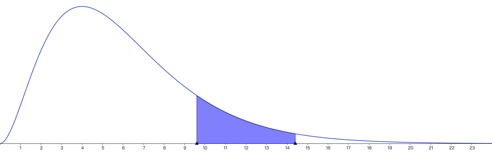
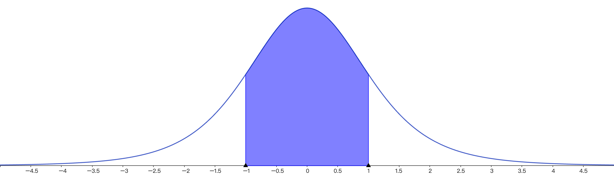
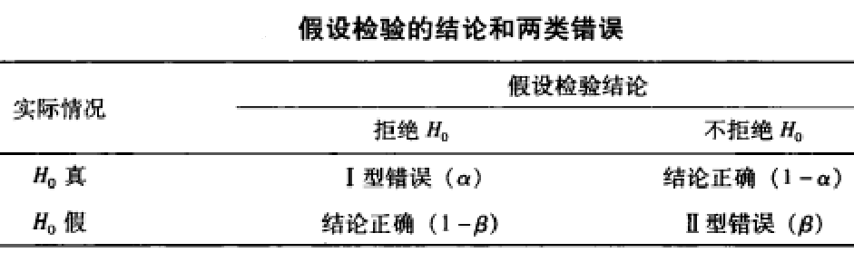

假设检验
随机变量的期望
离散型随机变量的期望
定义1：如果$X$是一个离散型随机变量，其分布列为$p(x)$，那么$X$的期望记为$E(X)$，定义如下：
$$
E(x)=\sum_{x}xp(x)
$$
用语言表达，$X$ 的期望值就是$X$ 的所有可能的一个加权平均，每个值的权重就是$X$ 取得该值的概率。所以，期望的意义在于对随机变量进行整体的综合估计，给出一个随机变量的“平均值”.
例1： $120$ 名学生坐$3$ 辆大巴去听交响乐演出，第一辆车上有$30$名学生，第二辆车上有$40$名学生，第三辆车上有$50$名学生。到达目的地后，从所有学生中随机抽取一名。令$X$ 表示被随机选中的学生所乘坐的车上的学生数，求$E(X)$ .
例2：设离散型随机变量$X$的可能取值为${-1,0,1}$，其对应概率为$P(X=-1) = 0.2,P(X=0) = 0.5,P(X=1) =0.3$. 求$E(X^2)$
定理1: 如果$X$ 是一个离散型随机变量，其可能取值为$x_i，i\ge 1$,相应的取值概率为$P(x_i)$,那么对于任意实函数$g$，都有
$$
E(g(X)) = \sum_{i}g(x_i)p(x_i)
$$
证明从略
课后作业1：某人参加答题秀节目，需要回答两个问题，他可以自行决定回答的顺序，并且只有在答对了一个之后才有资格继续回答另一个。如果他正确回答了问题$i(i=1,2)$ 则可以获得$V_i$ 元的奖励。假设他能正确回答问题$i$ 的概率为$p_i$ ，问他先回答那个问题才能使得获得奖励的期望最大化？
连续型随机变量的期望
定义2: 如果$X$ 是一个连续型随机变量，密度函数为$f(x)$，那么由于对于很小的 $dx$ 有
$$
f(x)dx \approx P(x\le X \le x+dx)
$$
所以，可以得出连续型随机变量的期望为
$$
E(X) = \int_{-\infty}^{+\infty} xf(x) dx
$$
例3：设随机变量$X$ 的密度函数为
$$
\begin{equation*}
f(x)=
\begin{cases}
2x \qquad 0\le x \le 1\\
0 \qquad else
\end{cases}
\end{equation*}
$$
求$E(X)$.
例4： 设随机变量X的密度函数为
$$
\begin{equation*}
f(x)=
\begin{cases}
1 \qquad 0\le x \le 1\\
0 \qquad else
\end{cases}
\end{equation*}
$$
求$E(e^X)$.
定理2： 设$X $ 是一个连续型随机变量，其概率密度函数为$f(x)$,那么对于任意实函数$g$，有
$$
E(g(X)) = \int_{-\infty}^{+\infty} g(x)f(x) dx
$$
证明从略
课后作业2: 一根长度为$1$ 的绳子在$U$ 点处断开，其中$U$ 是密度函数为$f(u)=1(0<u<1)$ 的随机变量。点$p(0\le p \le 1)$ 是绳子上的某一点。求包含点$p$ 的那一段的长度的期望值。
随机变量的方差
随机变量的期望给出了一个用以估计随机变量平均值的合理方法，但是它并没有告诉我们任何关于随机变量中的取值相对于其均值的偏离程度或者说离散程度的信息。因此我们需要引入关于方差的概念。
离散型随机变量的方差
定义3： 如果离散型随机变量$X $的期望为$\mu$，那么$X $的方差记为 $Var(X)$，其定义为
$$
Var(X) = E((X-\mu)^2)
$$
下面对方差的另一表达式进行推导：
$$
\begin{equation*}
\begin{aligned}
Var(X)&=E((X-\mu)^2)\\
&= \sum_{x} (x-\mu)^2p(x)\\
&= \sum_{x}(x^2-2\mu x+\mu^2)p(x)\\
&= \sum_{x} x^2p(x)-2\mu\sum_{x}xp(x) + \mu^2\sum_{x}p(x)\\
&= E(X^2)-2\mu^2+u^2\\
&= E(X^2)-\mu^2
\end{aligned}
\end{equation*}
$$
即：
$$
Var(X) = E(X^2)-E^2(X)
$$
用语言进行描述，就是$X$ 的方差等于 $X^2$ 的期望减去X的期望的平方，这是用于计算方差的快捷方式。
例5：投掷一枚骰子，设$X$表示掷出的点数，计算$Var(X)$
连续型随机变量的方差
连续型随机变量与离散型随机变量的方差定义是一致的。
定义4： 如果离散型随机变量 $X$ 的期望为$\mu$，那么$X$的方差记为$Var(X)$，其定义为
$$
Var(X) = E((X-\mu)^2)
$$
下面对方差的另一表达式进行推导：
$$
\begin{equation*}
\begin{aligned}
Var(X) &= E((X-\mu)^2) \\
&= \int_{-\infty}^{+\infty}(x-\mu)^2f(x)dx\\
&= \int_{-\infty}^{+\infty}(x^2-2\mu x+\mu^2)f(x)dx \\
&= \int_{-\infty}^{+\infty}x^2dx -2\mu\int_{-\infty}^{+\infty}xf(x)dx +\mu^2\int_{-\infty}^{+\infty} f(x)dx \\
&=E(X^2)-2\mu^2+\mu^2\\
&= E(X^2)-\mu^2
\end{aligned}
\end{equation*}
$$
即：
$$
Var(X) = E(X^2)-E^2(X)
$$
抽样分布
卡方分布
定义5： 设$X_1,X_2 \cdots X_n$是来自于标准正态总体$X\sim N(0,1^2)$的样本，则称统计量
$$
\chi^2 = X_1^2+X_2^2+\cdots+ X _n^2
$$
服从于自由度为$n$ 的卡方分布，记为$\chi^2\sim \chi^2(n)$
用语言描述，自由度为$n$ 的卡方分布就是由$n$个标准正态分布的平方和所构成的一个连续型随机变量。
注： 由于$X_1,X_2 \cdots X_n$是从标准正态总体$X\sim N(0,1^2)$中通过随机均匀抽样得到的，因此$X_1,X_2 \cdots X_n$是相互独立且均服从标准正态分布的。
卡方分布的概率密度函数公式极为复杂，没必要进行记忆，对其大致的函数图形进行了解即可：

t分布
定义6: 设$X\sim N(0,1^2),Y\sim \chi^2(n)$,且$X,Y$ 互相独立，则称
$$
t = \frac{X}{\sqrt{Y/n}}
$$
服从于自由度为$n$ 的$t$ 分布，记为$ t\sim t(n)$.
$t$分布的概率密度函数同样极为复杂，不必记忆，其函数图像大致如下：

$t$ 分布的密度函数 $h(t)$ 性质如下：
- $h(t)$为偶函数
- $\lim_{n\to \infty}h(t) = \frac{1}{\sqrt{2\pi}}e^{-\frac{t^2}{2}},t\in R$
性质2说明，当自由度充分大的时候，$t$ 分布就是标准正态分布
假设检验
假设检验的总体概述与基本概念
面对一个需要研究的事物总体，我们有可能并不知道它的分布类型和分布的参数。因此我们有必要事先对该总体的类型和参数进行假设，而后再对所做的假设进行检验，这个过程称为假设检验。
对总体分布类型的假设检验称为非参数检验，而在总体分布类型已知，仅对其参数做出的假设检验称为参数假设。例如，已知某座城市成年男性的身高服从于标准差为$20$ 的正态分布，但是均值未知，此时我们就可以对未知的均值做出如下几种假设：
- 身高$\mu = 175.0$
- 身高$\mu < 175.0$
- 身高$\mu > 175.0$
以上的三种假设我们统称为是原假设，每种假设又有与之对应的对立面，因此又可以得到三种备择假设：
- 身高$\mu \neq 175.0$
- 身高$\mu \ge 175.0$
- 身高$\mu \le 175.0$
因此，可以发现，假设检验的第一步，其实是根据实际情况做出合适的原假设和备择假设。
假设检验的基本原理
假设检验的基本原理是小概率事件在单次随机事件中不应当发生。
例如有$100$ 球，分成黑白两色，其中$99$ 个颜色相同，另$1$ 个则不同。但是$99$ 个白色还是$99$ 个黑色则不确定。此时我们可以做出$99$ 个是白色的原假设，则备择假设是就是$99$ 个是黑色。然后进行随机均抽样，如果抽出的是黑色，则有理由怀疑原假设是错误的，因为在原假设正确的情况下，抽样的样本结果显示为是一个小概率事件，这与小概率事件在单次随机事件中不应当发生的原理是违背的。因此拒绝原假设，接收备择假设。
假设检验的基本步骤
假设检验作为一种通过对抽样样本进行计算从而对事先假设参数进行检验的数学方法，其检验过程是有固定而严格的步骤的：
- 根据情况提出合适的原假设和对应的备择假设
- 根据未知参数的情况，构建合适的检验统计量，找出该检验统计量服从的分布$t$
- 对抽样得到的样本代入检验统计量进行计算，得到检验统计量的真实值$\tau$
- 根据显著性水平$\alpha$ 的值和检验的方向（左侧检验，右侧检验，双侧检验）确定分布$t$ 的拒绝域，并且确定对应的临界点$t_\alpha$
- 将$\tau$ 与 $t_\alpha$进行比较，观察$t_\alpha$ 是否落在拒绝域中。如果落在拒绝域中则拒绝原假设，反之则接受原假设，如果$\tau = t_\alpha$则重新抽样再次进行检验。
单个正态总体下的均值检验
设总体$X \sim N(\mu,\sigma^2)$, $\mu$ 与 $\sigma^2$均未知,$X_1,X_2,\cdots,X_n$是来自于总体$X$的样本。在此种情况下对均值进行检验，则对应的检验统计量服从于自由度为$n-1$的 $t$ 分布：
$$
t = \frac{\bar{X}-\mu_0}{S/\sqrt{n}} \sim t(n-1)
$$
其中，$\bar{X}$ 表示样本均值，$\mu_0$ 表示所假设的均值，$S$ 为样本标准差，其计算公式为$S=\sqrt{\frac{1}{n-1}\sum_{i=1}^n(X_i-\bar{X})^2}$, $n$ 为样本数.
例6： 某电子元件的寿命服从$X\sim N(\mu,\sigma^2),\mu,\sigma$ 均未知，现在从所有原件中抽取$16$ 个，测得其均值为$241.5$ ，问：是否有足够理由认为该元件总体的寿命均值大于$225$（显著性水平取$\alpha = 0.05$）
两个正态总体均值差的假设检验
设总体$X \sim N(\mu_1,\sigma_1^2)$, $\mu_1$ 与 $\sigma_1^2$均未知,$X_1,X_2,\cdots,X_{n1}$是来自于总体$X$的样本;设总体$Y \sim N(\mu_2,\sigma_2^2)$, $\mu_2$ 与 $\sigma_2^2$均未知,$Y_1,Y_2,\cdots,Y_{n2}$是来自于总体$X$的样本。$X$ 与$Y$ 互相独立，且其标准差$\sigma_1$ 与 $\sigma_2$相等。
满足上述条件的两个总体，需要对其均值差进行检验时，则对应的检验统计量服从于自由度为$n_1+n_2-1$的 $t$ 分布：
$$
t = \frac{(\bar{X}-\bar{Y})-(\mu_1-\mu_2)}{s_w\cdot\sqrt{\frac{1}{n_1}+\frac{1}{n_2}}}
$$
其中，$\mu_1-\mu_2$为所要检验的均值差,$n_1$ 为$X$ 的样本数,$n_2$ 为 $Y$ 的样本数,$S_w = \sqrt{\frac{(n_1-1)S_X^2+(n_2-1)S_Y^2}{n_1+n_2-2}}$, $S_X$ 为$X$ 的样本标准差，$S_Y$ 为 $Y$ 的样本标准差。
例7： 两种方法测水的熔化热，用A方法测的$5$ 个样本的熔化热为：
$$
79.98,80.04,80.02,80.04,80.03
$$
用B方法测得的$6$ 个样本的熔化热为：
$$
80.02,79.94,79.98,79.97,79.97,80.03
$$
假设这A方法得到的数据满足:
$$
X\sim N(\mu_1,\sigma^2)
$$
B方法得到的数据满足:
$$
Y\sim N(\mu_2,\sigma^2)
$$
其中$\mu_1,\mu_2,\sigma$均未知。问:是否有理由认为A方法测得的熔化热均值小于B方法？
第一类错误与第二类错误
第一类错误又称为弃真错误，指在假设检验中，原假设$H_0$ 其实是正确的情况下，计算出的检验统计量却落入了拒绝域从而拒绝了原假设，此时就抛弃掉了真理。
第二类错误又称为纳伪错误，指在假设检验中。原假设$H_0$ 其实是错误的情况下，计算出的检验统计量却落入了接受域从而接受了原假设，此时就接受了谬误。
由于检验统计量一般是围绕原假设$H_0$ 构造的，也就是在进行假设检验的过程中，我们一般都是认为$H_0$ 成立的前提下进行计算的，因此如果$H_0$ 确实是真的，那么检验统计量落入拒绝域的概率就等于显著性水平$\alpha$ ，而接受$H_0$ 的概率则是$1-\alpha$ 。
第二类错误$\beta$ 的概率一般情况下是不知道的，因为这需要我们围绕着备择假设$H_1$ 构造检验统计量，而这是比较复杂的，因此在做假设检验时，我们往往只对控制第一类错误的发生概率进行控制。在实际的检验中，同时减少量类错误的方法一般是适当增大样本容量。

课后作业
-
设某样本服从正态分布，总体均值与方差均未知，现对总体进行抽样，分别为$10.8，9.5，11.7，8.6，10，10.5, 10, 9.3$ 。问：是否有理由认为，总体的均值是$10$ ？
-
设有两个独立的总体$X，Y$ 均服从正态分布，其均值与方差均未知。现对两总体进行采样，$X$ 的样本为$10.8，9.5，11.7，8.6，10，10.5, 10, 9.3$ ，$Y$ 的样本为$11.7,11.8,10.6,10.7,12.3,10.4,11.2,11.0$ 问：是否有理由认为总体$Y$ 的均值比总体$X$ 的均值大$1$ ？